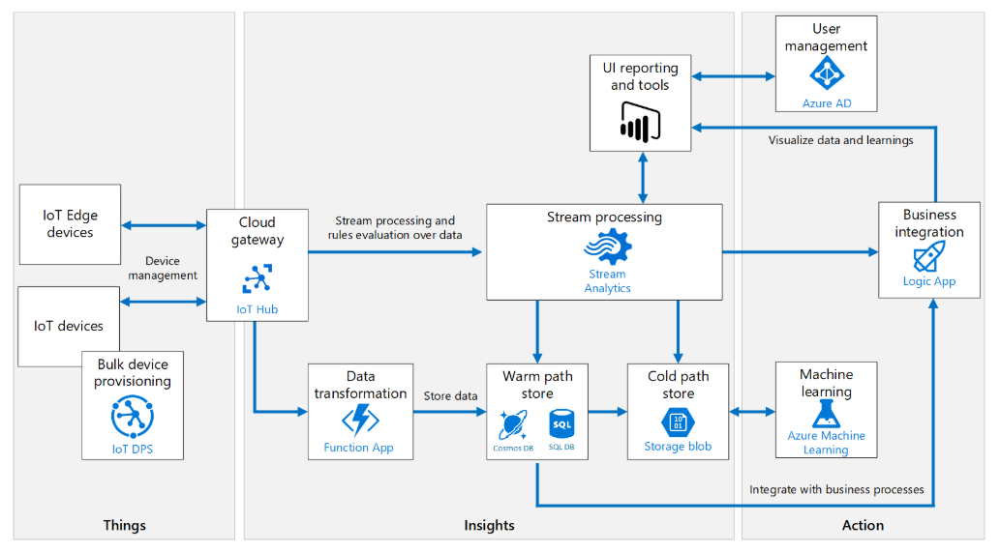
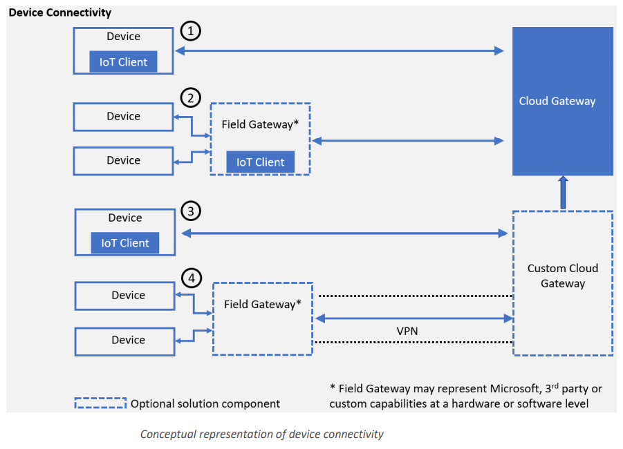
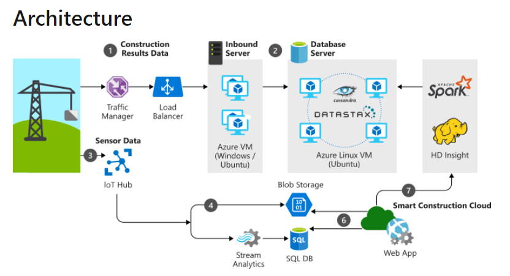
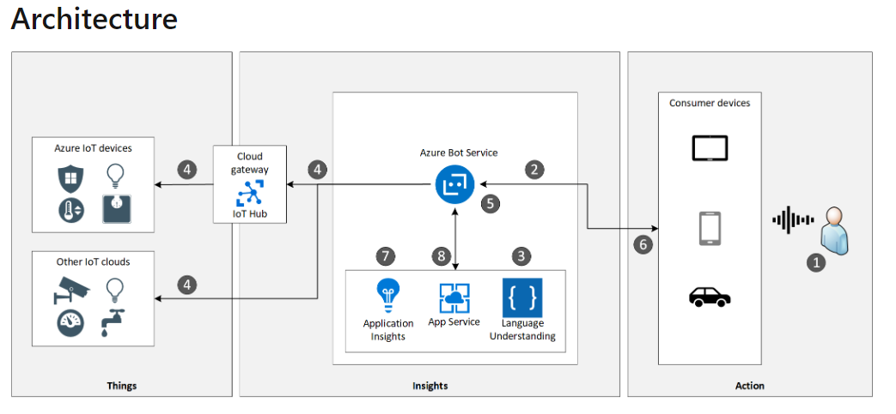
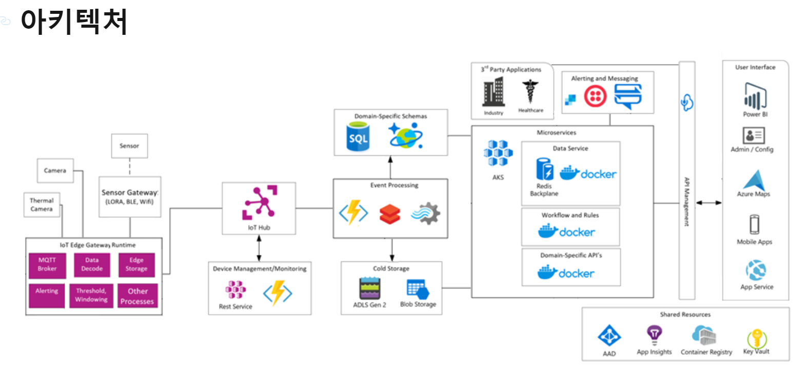

IoT란 각종 사물에 센서와 통신 기능을 내장하여 무선 네트워크 상에서 데이터를 수집하고 전송하는 시스템을 말합니다. Azure Architecture Center에서 제안하는 IoT 참조 아키텍처를 설명합니다.
Azure IoT Reference Architecture
Microsoft가 제안하는 Azure PaaS component를 이용한 아키텍처는 다음과 같습니다. 
Edge Device와 IoT 디바이스로부터 온 데이터의 형식을 변환해서 Cold Path와 Warm Path로 데이터를 나눠서 처리하고, 미리 수집한 데이터와 디바이스 데이터를 결합하여 머신러닝을 적용해 비즈니스 인사이트를 도출합니다.
Cold Path, Warm Path? 측정 데이터 처리 방식에 따라 나눌 수 있습니다. Hot path는 거의 실시간으로 측정 데이터를 분석합니다. 스트림 데이터를 처리하는 엔진으로 구현합니다. 처리 결과는 알람을 트리거하거나 분석 도구를 사용하여 쿼리할 수 있도록 구조화된 형식으로 기록됩니다. Cold path는 측정 데이터가 배치 작업으로 보내지고, 간격을 두고 작업을 수행합니다. 일반적으로 대량의 데이터에 적용됩니다.
Architecture Component 설명
-
Azure IoT Edge : 장치 자체 또는 필드 게이트웨이에서 일부 데이터 처리를 수행하는 IoT devices는 Azure IoT Edge를 통해 관리할 수 있습니다. 장치에 코드를 일괄 배포하거나 원격으로 장치를 관리할 수 있습니다.
-
IoT Hub : Cloud gateway 역할을 합니다. 장치로부터 오는 이벤트를 처리하는 클라우드 서비스를 호스팅합니다. IoT devices와 백엔드 서비스 사이의 브로커 역할로 이해할 수 있습니다. 보안 연결, 이벤트 수집, 양방향 통신 및 장치 관리 등 기능을 제공합니다.
IoT Hub 제공 프로토콜
- MQTT 3.1.1
- MQTT over WebSockets
- AMQP 1.0
- AMQP over WebSockets and
- HTTPS
-
IoT Hub Device Provisioning Service (DPS) : DPS를 사용하면 특정 Azure IoT Hub 엔드포인트에 장치를 할당하고 확장성이 뛰어난 방식으로 IoT devices를 자동 프로비저닝할 수 있습니다.
-
Azure Stream Analytics : 스트림 데이터를 집계하고 외부 데이터 소스를 결합하여 복잡한 분석을 실행할 수 있습니다.
-
Cosmos DB : Warm path storage로 사용할 수 있는 PaaS 데이터베이스로는 Cosmos DB가 있습니다. Cosmos DB는 글로벌 분산과 확장이 용이합니다. Azure 에서 제안하는 IoT Architecture에 Cosmos DB를 Warm path로 사용하는 또 다른 시나리오를 쉽게 찾아볼 수 있습니다. CosmosDB를 Warmpath DB로 활용한 아키텍처
-
Azure Blob Storage : Cold path storage로 Azure Blob Storage를 사용합니다. IoT Hub 메시지 라우팅을 사용하면 IoT devices 메시지를 Azure Blob 저장소에 저장할 수 있으므로, Blob 저장소가 저렴하고 장기적인 콜드 데이터 저장소 역할을 할 수 있습니다. 참고 > IoT Edge에서 Azure Blob Storage를 사용하여 데이터 저장
-
protocol gateway : 원격 측정 스트림 데이터를 조작하거나 집계하는 작업이 필요할 수 있습니다. 예를 들어 이진 데이터를 JSON으로 변환하거나 데이터 포인트를 결합하는 등 프로토콜 변환하는 작업이 이에 해당합니다. 데이터가 IoT Hub에 도달하기 전 변형되어야 할 경우, protocol gateway를 사용해 처리할 수 있습니다. 만약 데이터가 IoT Hub에 도달하고 나서 변환해야 하는 경우, IoT Hub에 발생하는 이벤트로 Azure Functions 함수를 트리거하여 작업할 수도 있습니다.
-
Azure Logic Apps : 데이터를 서비스에 통합해야 할 때 필요한 작업이나 비즈니스 프로세스 및 워크플로를 예약하여 자동화하는 데 유용한 서비스입니다. 경보를 발생하거나 이메일 또는 SMS 메시지를 전송하는 작업을 정의할 수도 있습니다.
-
Azure Active Directory : Azure Active Directory를 통해 서비스에 접근할 수 있는 사용자를 관리합니다.
Device Connectivity
장치를 클라우드 게이트웨이에 연결하는 4가지 방법이 있습니다.

① 클라우드 게이트웨이에 직접 장치를 연결: 인터넷을 통한 보안 연결을 의미합니다.
② 필드 게이트웨이를 통한 연결(IoT Edge Device): 산업별 표준, 단거리 통신 기술(Bluetooth, ZigBee)을 사용하는 장치, TLS/SSL 스택을 호스팅할 수 없는 리소스 제약 장치 또는 인터넷에 노출되지 않은 장치를 연결할 때 사용합니다. 이 옵션은 스트림과 데이터 집계를 필드 게이트웨이에서 실행할 때 유용합니다.
③ 사용자 지정 클라우드 게이트웨이를 통한 연결: 클라우드 게이트웨이 엔드포인트에 도달하기 전에 프로토콜 변환 또는 사용자 지정 처리가 필요한 경우 사용합니다.
④ 필드 게이트웨이 및 사용자 지정 클라우드 게이트웨이를 통한 연결: 클라우드 측에서 일부 프로토콜을 적용하거나 사용자 지정이 필요할 때, 클라우드에서 실행되는 사용자 지정 게이트웨이에 연결하도록 선택할 수 있습니다. 일부 시나리오는 VPN 기술을 사용하거나 애플리케이션 레벨 릴레이 서비스를 사용하여 격리된 네트워크 터널을 사용하는 필드 및 클라우드 게이트웨이와의 통합이 필요합니다.
추가로 IoT 보안 관련 문서를 확인할 수 있습니다.
IoT 시나리오별 아키텍처
1. 건축 산업 IoT Architecture

대규모 장치 데이터를 수집하여 건설 장비를 원격으로 자동 제어하는 기능을 구현하기 위한 아키텍처입니다. 사물인터넷(IoT)과 GPS 기술을 탑재한 차량, 미터기, 드론을 구축해 원격측정 데이터를 내보냅니다. 건설 현장 장비 및 데이터를 통합하고 분석하여 장비 다운타임을 최소화하고 도난을 방지합니다.
-
Traffic Manager : 트래픽 매니저는 서로 다른 Azure region의 서비스 엔드포인트에 대한 사용자 트래픽 분포를 제어합니다.
-
Load Balancer : VM 기반 웹 서비스를 통해 건설 장비 디바이스에서 전송된 데이터를 분산하여 고가용성을 제공합니다.
-
Apache Cassandra : 시공 데이터를 저장하는 데 사용되는 분산 NoSQL 데이터베이스입니다. Cosmos DB 로 대체할 수 있습니다.
-
Web Apps : 소스 데이터와 이미지를 쿼리하고 보는 데 사용할 수 있는 최종 사용자 웹 애플리케이션을 호스트합니다. 아파치 스파크에 대한 일괄 작업 수행에 사용합니다.
-
Apache Spark on HDInsight : 빅데이터 분석 애플리케이션의 성능을 향상시키기 위해 메모리 내 처리를 지원합니다. 이 시나리오에서 스파크는 아파치 카산드라에 저장된 데이터에 대해 복잡한 알고리즘을 실행하는 데 사용합니다.
-
Blob storage : IoT 허브 디바이스로부터 모인 이미지 데이터를 저장합니다. 웹 애플리케이션을 통해 이미지 데이터 조회합니다. Data Lake Storage로 대체할 수 있습니다.
2. 음성 도우미 IoT Architecture

사용자가 음성을 이용해 비서 애플리케이션을 사용하는 시나리오입니다. IoT devices가 타사 IoT 클라우드에 연결되면 Azure Bot Service를 통해 타사 서비스 API에 연결하여 장치에 명령을 전송합니다.
3. COVID-19 보호를 위한 IoT Architecture

열 감지 카메라 등 다양한 센서에서 수집된 온도 및 시각 데이터를 IoT Edge 게이트웨이에서 전처리합니다. 클라우드에서는 IoT hub와 통신하여 네트워크를 제어하고 데이터를 Azure 리소스로 스트리밍합니다. Azure API Management는 웹 앱, 모바일 앱, Azure maps 및 Power BI와 같은 엔드포인트에 배포 시 내부와 외부 API를 통합하는 역할을 합니다. 배포 된 앱은 Azure Active Directory, Azure Key Vault및 Azure Monitor 같은 azure 서비스로 관리됩니다.
지금까지 Azure IoT 참조 아키텍처를 기반으로 IoT를 위한 Azure PaaS 서비스를 알아보았습니다.